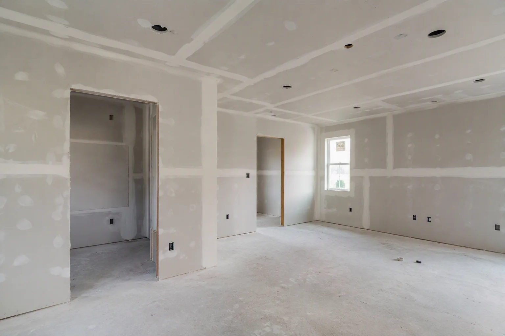
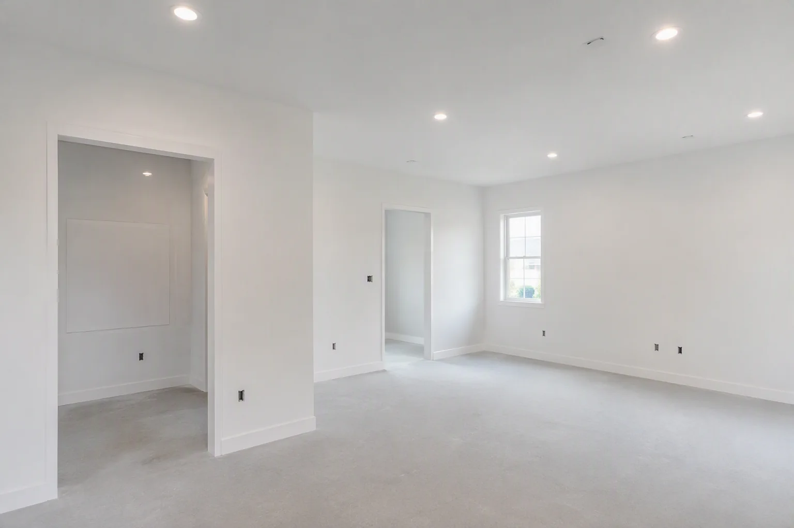
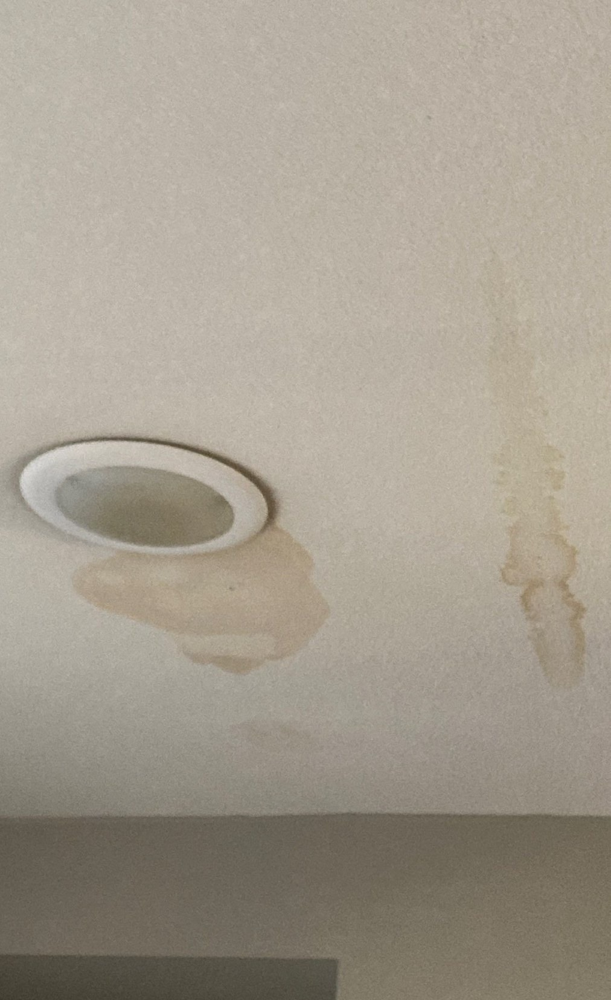
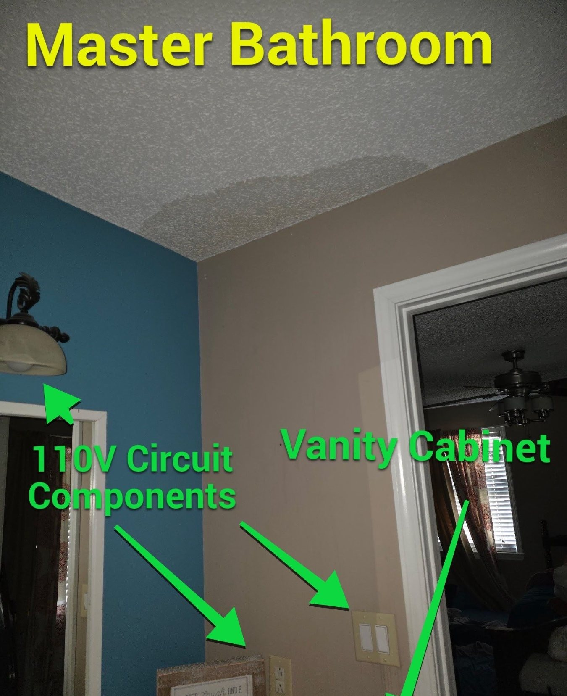
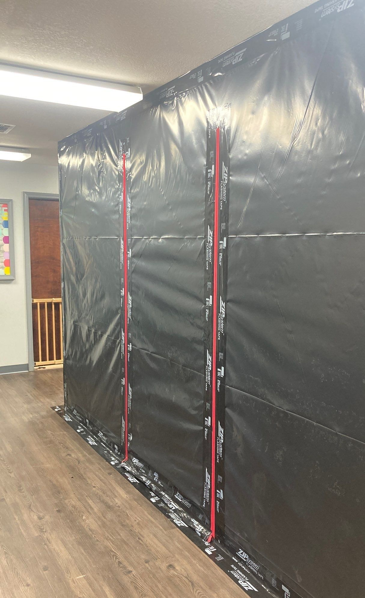
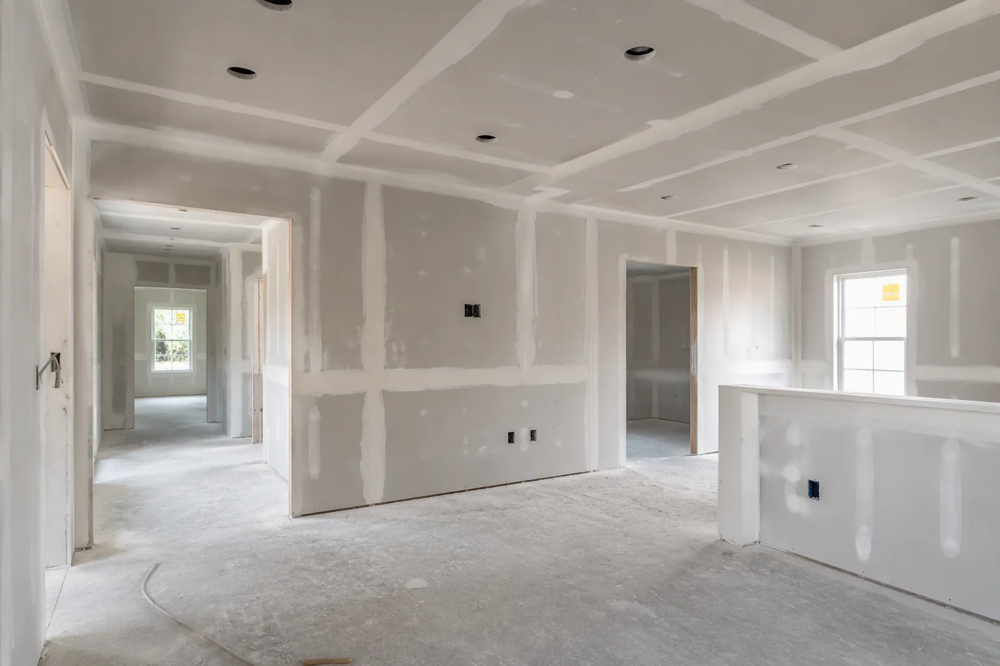
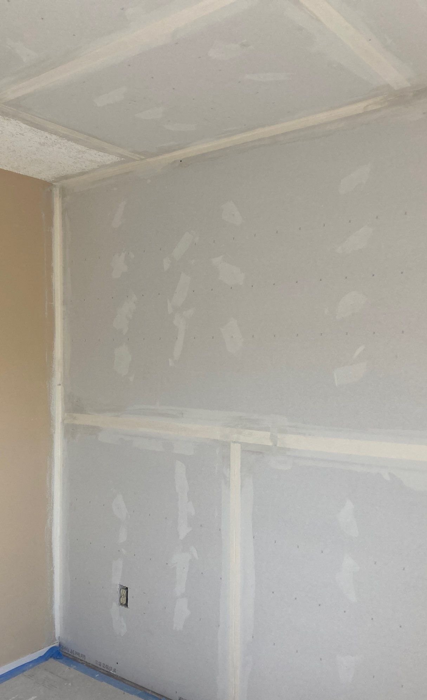

New Drywall and Joint Finishing
Panels, fasteners, tape, joint compound, inside corners, outside corners, and openings are finished in stages for the selected surface treatment.
Crain Bros Inc repairs and installs drywall walls and ceilings in Jonesboro and throughout Northeast Arkansas.
Crain Bros Inc provides drywall repair, sheetrock replacement, joint finishing, texture matching, popcorn ceiling removal, and new drywall installation for property damage, remodeling, additions, and building alterations.
Crain Bros Inc provides these drywall services in Jonesboro, Paragould, Brookland, Bay, Blytheville, Bono, Caraway, Gosnell, Harrisburg, Lake City, Monette, Newport, Trumann, and Walnut Ridge and nearby Northeast Arkansas communities.
Discuss Your Drywall Project
Crain Bros Inc repairs, replaces, installs, finishes, and restores drywall walls and ceilings in Jonesboro and throughout Northeast Arkansas for residential and commercial property owners. The family-owned and operated Arkansas contractor has served property owners since 1984.
Each project is planned around the reason the drywall is being opened, repaired, replaced, or installed. Work may begin with visible wall or ceiling damage, continue through inspection and repair of concealed conditions, and finish with drywall installation, joint treatment, texture, primer, and preparation for paint.
Crain Bros Inc repairs and replaces water-damaged drywall walls and ceilings in Jonesboro and throughout Northeast Arkansas. The service addresses sheetrock affected by roof leaks, plumbing leaks, appliance leaks, window and door leaks, and water that has traveled through concealed wall or ceiling cavities, with water damage restoration services available for the larger damage scope.
A leaking sink can damage drywall behind a cabinet or along the wall beside the vanity. Water from a washing machine, dishwasher, refrigerator, or water heater can enter the bottom of a wall and travel beyond the appliance. Rain entering around a window or exterior door can affect the drywall around the opening and the insulation or framing behind it.
Crain Bros Inc traces the source and visible path of the damage, documents the conditions, and determines which drywall can be fixed and which sections need removal and replacement. When drying and restoration work are also required, our water damage restoration services address the damaged materials and the larger repair.


Crain Bros Inc provides drywall damage repair after storms and roof leaks in Jonesboro and throughout Northeast Arkansas. The work can restore sheetrock ceilings and walls after wind, hail, fallen limbs, damaged roofing, failed flashing, or exterior openings allow rain into the building, with storm damage restoration services available for the larger property damage.
Crain Bros Inc documents the damaged drywall and opens selected areas when the concealed condition must be seen. Electrical components exposed to water are referred into the project’s electrical inspection and repair scope before the wall or ceiling is closed. Storm-related drywall repair can include protection, selective removal, cavity inspection, insulation work, panel replacement, joint finishing, texture, primer, and paint preparation.
Learn how our storm damage restoration services coordinate building repairs after severe weather.
Crain Bros Inc provides drywall wall damage repair and sheetrock wall repair in Jonesboro and throughout Northeast Arkansas. The service covers stained, cracked, punctured, softened, opened, or removed drywall on interior walls.
Sheetrock wall repair may be needed after a hidden plumbing leak, a leaking appliance connection, water entering around a window or door, impact damage, remodeling changes, or access needed to reach building systems behind the wall. Crain Bros Inc fixes the drywall portion of the wall while coordinating the related source repair and concealed work included in the project.
Crain Bros Inc provides drywall ceiling damage repair and sheetrock ceiling repair in Jonesboro and throughout Northeast Arkansas. The service covers ceiling stains, sagging drywall, failed seams, damaged texture, roof-leak damage, plumbing leaks from above, and water around ceiling fixtures.
Sheetrock ceiling repair can involve removing an affected section, inspecting insulation and framing, coordinating electrical inspection around wet fixtures or boxes, installing replacement drywall, finishing the joints, matching the ceiling texture, applying primer, and preparing the ceiling for paint.
Crain Bros Inc performs controlled invasive inspections behind drywall in Jonesboro and throughout Northeast Arkansas when the visible surface does not show the complete condition. Measured openings allow the wall or ceiling cavity to be examined and documented before a repair scope is finalized through building inspection and diagnostic services.
Inspection begins where the evidence points. The opening can expand one cavity at a time when moisture, damaged insulation, deteriorated framing, affected wiring, plumbing, ductwork, or another condition continues beyond the first access point. This approach gives the repair scope physical evidence instead of relying on a surface-only patch.
The findings can bring our electrical services, plumbing services, HVAC services, or Building Inspection & Diagnostics services into the project before replacement drywall conceals the cavity again.
Crain Bros Inc provides controlled drywall openings, building diagnostics, and Leak Detection Services in Jonesboro and throughout Northeast Arkansas when a stain, damp area, or recurring repair does not reveal where the moisture started. The investigation follows the visible damage, likely entry or escape points, moisture travel path, and connected building systems before the drywall repair is finalized.
Crain Bros Inc replaces drywall after approved mold removal in Jonesboro and throughout Northeast Arkansas. The service rebuilds walls and ceilings after the moisture source, removal scope, cleaning, and verification work are addressed.
Drywall replacement begins after the moisture source, removal scope, cleaning, and verification work are addressed. The rebuilding can include insulation, new drywall panels, joint finishing, texture matching, primer, and preparation for paint.
Crain Bros Inc removes and replaces drywall damaged by fire, smoke, and heat in Jonesboro and throughout Northeast Arkansas. Water used by fire hoses, sprinkler systems, and other firefighting efforts can also soak drywall, insulation, and concealed wall or ceiling cavities, so the drywall scope is based on both the fire-related damage and the water used to put out the fire.
Drywall exposed to fire, heat, smoke, or water used to put out a fire may need to be removed and replaced. Fire hoses, sprinkler systems, and other firefighting efforts can soak drywall, insulation, and concealed wall or ceiling cavities while the fire is being extinguished.
When water used to put out the fire affects walls, ceilings, insulation, or cavities, water damage restoration services can address that moisture-related scope while property damage restoration services coordinate the larger building repair.
The drywall scope can include selective removal, cavity inspection, drying coordination, insulation work, replacement panels, joint finishing, texture matching, primer, and preparation for paint after the related fire and water damage is addressed.
Crain Bros Inc sets up containment and captures dust at the source during drywall removal, cutting, sanding, and replacement in Jonesboro and throughout Northeast Arkansas to protect the property, occupants, unaffected rooms, nearby finishes, and personal property. The work plan can use temporary barriers, controlled access, negative pressure, tool-connected dust capture, HEPA-filtered equipment, and HEPA-filtered cleanup to keep drywall dust inside the controlled work area.
When the approved work plan calls for it, negative-pressure containment directs airflow into the controlled area and helps limit dust migration into unaffected rooms. Local dust collection and HEPA-filtered cleanup support the same goal during removal and finishing.
Some construction materials and work activities can create respirable crystalline silica exposure. Crain Bros Inc evaluates the actual products and tasks and follows applicable worker-protection requirements. Read the NIOSH drywall-sanding evaluation, the OSHA construction silica guidance and the OSHA respirable crystalline silica standard for construction.

Crain Bros Inc installs and finishes new drywall for remodels, additions, and building alterations in Jonesboro and throughout Northeast Arkansas. The service includes drywall for kitchens, bathrooms, new partitions, changed layouts, relocated openings, and interior updates.

Panels, fasteners, tape, joint compound, inside corners, outside corners, and openings are finished in stages for the selected surface treatment.

New drywall is blended with existing surfaces where layouts, fixtures, cabinets, plumbing, wiring, or mechanical work change the room.

The full-height photograph shows joint treatment across walls, ceilings, corners, doorways, and electrical openings during an active project.
Crain Bros Inc applies new drywall texture and matches existing wall and ceiling texture in Jonesboro and throughout Northeast Arkansas. Texture services support new installation, patches, inspection openings, water-damage repairs, and larger panel replacements.
Some repairs need a focused texture blend. Larger replacement areas may produce a better finished appearance when the texture treatment extends across a broader wall or ceiling plane. The scope is selected around the existing surface and the result the property owner wants.
Crain Bros Inc removes popcorn and acoustic ceiling texture in Jonesboro and throughout Northeast Arkansas as part of approved ceiling updates. The service can include drywall repair, skim coating, sanding, new texture, primer, and preparation for paint after the existing material is evaluated.
Older ceiling texture may contain asbestos. Material that may contain asbestos requires appropriate evaluation before disturbance. The EPA asbestos resource explains federal information for property owners, renovation work, and asbestos professionals.
Crain Bros Inc updates existing drywall surfaces in Jonesboro and throughout Northeast Arkansas when walls or ceilings contain old patches, loose tape, dents, fastener marks, damaged corners, torn facing paper, ridges, or uneven texture.
Drywall updating also helps remodeled areas transition into the existing home. The work can blend new partitions into old rooms, close openings left by removed fixtures, repair surfaces around new cabinets, and restore walls after plumbing or electrical access.
Crain Bros Inc repairs drywall walls and ceilings before painting in Jonesboro and throughout Northeast Arkansas. The service prepares holes, cracks, seams, joint tape, corners, facing paper, patches, texture, and stained areas for primer and finish paint.
The repair process can include taping, successive joint-compound applications, sanding, dust removal, texture work, stain-blocking preparation, and primer selected for the repaired surface. Our painting services can carry the project from drywall preparation through the approved finish coats.
Crain Bros Inc completes included insulation and wall-or-ceiling cavity work before installing replacement drywall in Jonesboro and throughout Northeast Arkansas. The sequence allows framing, penetrations, wiring, plumbing, ductwork, and insulation to be addressed before the cavity is closed.
Insulation included in the project is fitted around wires, pipes, boxes, corners, and penetrations. The concealed work can be photographed before drywall closes the cavity. Review our insulation services for related building-envelope work.
Crain Bros Inc documents drywall damage and completed drywall work on properties involved in insurance claims in Jonesboro and throughout Northeast Arkansas. Project records can identify visible damage, inspection openings, concealed conditions, removed materials, replacement work, finishing stages, and completed repairs.
Before, during, and after photographs create a clear record of the property conditions and the work performed. Measurements, scope notes, discovered conditions, and change documentation help the property owner maintain organized information while handling the claim.
Crain Bros Inc plans drywall installation, finishing, and dust-control services in Jonesboro and throughout Northeast Arkansas around the actual wall or ceiling assembly, the selected finish, manufacturer instructions, applicable building requirements, and recognized gypsum-panel and worker-safety standards.
ASTM C840 covers application and finishing requirements for gypsum board. Fire-rated or sound-control assemblies may also require specific panel types, thicknesses, layers, fasteners, spacing, joint treatment, and tested assembly details.
Crain Bros Inc provides drywall services in Jonesboro and throughout Northeast Arkansas as part of property damage restoration, remodeling, general contracting, and projects that require electrical, plumbing, insulation, painting, or diagnostic work.
Explore Property Damage Restoration ServicesDrying, selective removal, cavity work, and drywall rebuilding can be coordinated after roof, plumbing, appliance, window, or door leaks.
Explore Water Damage Restoration ServicesRoof and exterior damage can allow rain into ceilings and walls, creating a drywall repair scope after the building is protected.
Explore Storm Damage Restoration ServicesDrywall rebuilding can follow approved mold removal, cleaning, moisture correction, and verification work.
Explore Mold Damage Restoration ServicesDrywall repair can be included with inspection, cleaning, insulation, and rebuilding after fire, smoke, heat, and firefighting water damage.
Explore Fire Damage Restoration ServicesControlled openings and documented findings help define repairs when the full condition is concealed by drywall.
Explore Building Inspection & Diagnostic ServicesDrywall installation and finishing support kitchens, bathrooms, altered layouts, room updates, and interior improvements.
Explore Remodeling ServicesProjects involving several trades can place drywall work within one coordinated construction scope.
Explore General Contracting ServicesElectrical inspection and repair may be required when water reaches wiring, boxes, fixtures, or components behind drywall.
Explore Electrical ServicesPlumbing repairs address leaking supply, drain, fixture, and appliance connections before damaged drywall is restored.
Explore Plumbing ServicesInsulation exposed during drywall removal can be assessed, fitted, and documented before the cavity is closed.
Explore Insulation ServicesDrywall repair, texture, primer, and paint are coordinated so the completed wall or ceiling has the approved finish.
Explore Painting ServicesCrain Bros Inc provides leak detection services for concealed, intermittent, or uncertain water sources that affect drywall walls and ceilings in Jonesboro and throughout Northeast Arkansas. The service helps identify likely entry or escape points, document moisture patterns, and establish what must be corrected before damaged drywall is closed and finished.
Explore Leak Detection ServicesCrain Bros Inc provides property-owner resources that connect drywall stains, leaks, cracks, sagging, and other visible damage to practical inspection and repair information in Jonesboro and throughout Northeast Arkansas.
Learn what a ceiling stain may indicate and why the source matters before the drywall is repaired.
Read why there is a water stain on a ceilingStart with the property symptom and review possible causes, inspection needs, and related repair paths.
Visit the Property Problem Diagnosis CenterExplore practical information about property damage, inspections, repairs, restoration, and construction decisions.
Visit Property Owner ResourcesCrain Bros Inc answers common questions about drywall repair, sheetrock replacement, texture matching, popcorn ceiling removal, dust control, and new drywall installation in Jonesboro and throughout Northeast Arkansas.
Crain Bros Inc repairs water-stained drywall when the panel remains suitable for repair after the water source and affected assembly are addressed. Soft, sagging, deteriorated, or unsalvageable sections may need removal and replacement.
Crain Bros Inc replaces drywall when the panel, attachment, facing paper, gypsum core, contamination, or approved restoration scope makes repair inappropriate.
Crain Bros Inc repairs or replaces sheetrock after the leak source and affected wall or ceiling assembly are addressed. The work can include documentation, controlled openings, cavity inspection, insulation, replacement drywall, finishing, texture, and preparation for paint.
Crain Bros Inc applies and blends drywall texture based on the existing pattern, previous coatings, surrounding condition, lighting, and repair size.
Crain Bros Inc removes popcorn or acoustic ceiling texture as part of approved ceiling updates. The work can include drywall repair, skim coating, sanding, new texture, primer, and preparation for paint.
Crain Bros Inc repairs holes, failed seams, loose tape, damaged corners, poor patches, texture differences, and stained areas before the selected primer and paint system are applied.
Crain Bros Inc installs and finishes drywall for additions, renovations, altered layouts, new partitions, and other remodeling work in Jonesboro and throughout Northeast Arkansas.
Crain Bros Inc uses the approved work plan to protect the property and occupants. Controls can include temporary containment, controlled access, negative pressure, tool-connected dust capture, HEPA-filtered equipment, and HEPA-filtered cleanup.
Crain Bros Inc documents drywall damage and project work with photographs, measurements, visible conditions, inspection openings, discovered conditions, removed materials, repair stages, and completed work so the property owner has organized records.
Crain Bros Inc provides drywall repairs, sheetrock replacement, new drywall installation, joint finishing, texture work, popcorn ceiling removal, and restoration in Jonesboro and throughout Northeast Arkansas.
Contact Crain Bros Inc